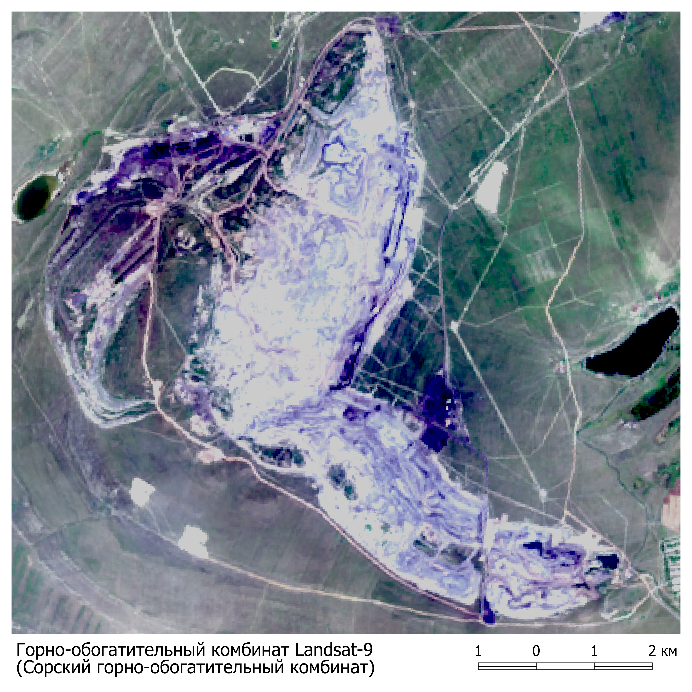

Горно-обогатительные комбинаты
Го́рно-обогати́тельный комбина́т (сокращённо ГОК) — комплексное горное предприятие по добыче и переработке твёрдых полезных ископаемых. Необходимость в строительстве на одной производственной площадке производственных переделов не только по добыче, но и по переработке и обогащению добываемых из недр полезных ископаемых, возникла в связи с тем, что для дальнейшего использования полезных ископаемых необходимо повысить в них содержание полезных компонентов.
